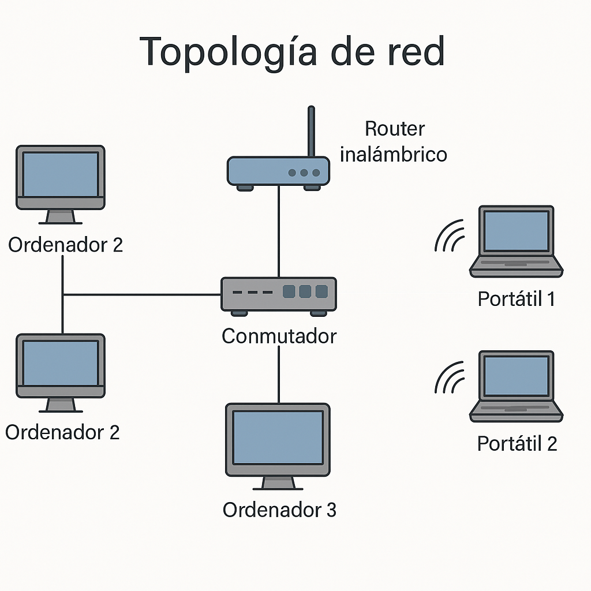

Unidad 2 – Redes Básicas y Comunicaciones¶
🎯 ¿Qué vamos a aprender?¶
Vamos a comprender cómo se comunican los dispositivos entre sí en una red local. Aprenderemos los fundamentos de las redes, los elementos físicos que las componen y cómo configurar topologías básicas, tanto en simuladores como con material real.
📏 ¿Cómo lo vamos a evaluar?¶
La evaluación será continua y práctica: participaremos en actividades individuales y grupales, resolveremos problemas reales, documentaremos procedimientos, simularemos redes y conectaremos equipos reales. Usaremos rúbricas, escalas de observación, pruebas prácticas y reflexiones individuales.
🔎 ¿Qué haremos en esta unidad?¶
Montaremos una red sencilla con equipos reales, configuraremos direcciones IP, simularemos su funcionamiento en Packet Tracer, exploraremos el envío de datos, tipos de red y medios de transmisión, y resolveremos fallos básicos.
✅ Resultados de aprendizaje¶
- RA1: Evalúa sistemas informáticos y sus componentes.
- RAT1: Participa eficazmente en equipos multidisciplinares.
- RAT2: Desarrolla la capacidad de aprendizaje autónomo.
📊 Criterios de evaluación¶
- 1.a: Identifica componentes físicos y sus funciones.
- 1.d: Reconoce redes de datos y comunicaciones.
- rat1.a: Coopera en el desarrollo de una tarea técnica.
- rat2.a: Investiga cómo configurar y comprobar redes locales.
📋 Tabla resumen de actividades y evaluación¶
| Sesión | Tipo de actividad | Nombre de la actividad | Criterios de evaluación | Instrumentos de evaluación |
|---|---|---|---|---|
| 1 | Exploración | ¿Qué es una red? | 1.d, rat2.a | Cuestionario autocorregible, observación directa |
| 2 | Exploración | Elementos de una red local | 1.a, 1.d | Rúbrica de esquema, participación activa |
| 3 | Exploración | Tipos de red y medios de transmisión | 1.a, rat2.a | Ficha técnica, observación, rúbrica de práctica |
| 4 | Práctica real | Montaje de red física simple | 1.a, 1.d, rat1.a | Lista de verificación, capturas, observación directa |
| 5 | Simulación | Introducción a Packet Tracer | 1.d, rat2.a | Archivo .pkt, rúbrica de simulación |
| 6 | Análisis | Análisis de paquetes en Packet Tracer | 1.d, rat1.a | Tabla de observación, rúbrica de análisis |
| 7 | Diagnóstico | Fallos comunes en redes físicas | 1.a, 1.d, rat2.a | Informe breve, rúbrica de práctica |
| 8 | Comparativa práctica | Red física vs. red simulada | 1.a, rat1.a | Tabla comparativa, rúbrica de reflexión |
| 9 | Proyecto colaborativo | Diseño de una red para el aula | 1.d, rat1.a, rat2.a | Plano de red, presentación, rúbrica de propuesta |
| 10 | Simulación aplicada | Implementación simulada de la red | 1.a, 1.d, rat1.a | Archivo .pkt, rúbrica de simulación, capturas |
| 11 | Evaluación y reflexión final | Evaluación competencial + nube de palabras | 1.a, 1.d, rat2.a | Ficha de autoevaluación, nube digital, test, observación |
- 1.a: Identifica componentes físicos y sus funciones.
- 1.d: Reconoce redes de datos y comunicaciones.
- rat1.a: Coopera en el desarrollo de una tarea técnica.
- rat2.a: Investiga cómo configurar y comprobar redes locales.
⏱ Temporalización¶
- Duración total: 18 horas
- Número de sesiones: 11
Fase 1: Introducción y motivación (Sesiones 1 a 3)¶
🧠 Sesión 1: ¿Qué es una red? ¿Dónde la encontramos?¶
- Actividad: Creamos un mural digital en Padlet donde recogemos ejemplos cotidianos de redes (casa, instituto, ciudad). Completamos un cuestionario interactivo y analizamos un mapa de red real del aula.
-
Implementación:
-
Presentamos el concepto de red con imágenes y ejemplos.
- Lluvia de ideas en Padlet con dispositivos conectados.
- Completamos una ficha de lectura con definiciones clave.
- Cuestionario digital para verificar la comprensión.
- Criterios: 1.d, rat2.a
- Instrumentos: Cuestionario autocorregible, observación directa.
📦 Sesión 2: Elementos de una red local¶
- Actividad: Identificamos los componentes físicos de una red LAN (tarjetas de red, switch, router, cables) y los representamos en un esquema.
-
Implementación:
-
Observamos y manipulamos físicamente los elementos de red.
- Tomamos fotos y etiquetas para documentar cada uno.
- Diseñamos un esquema visual en papel o Canva.
- Criterios: 1.a, 1.d
- Instrumentos: Rúbrica de esquema, participación activa.
🧩 Sesión 3: Tipos de red y medios de transmisión¶
- Actividad: Clasificamos diferentes tipos de red (LAN, WAN, MAN, PAN) y experimentamos con cables y conectores.
-
Implementación:
-
Completamos una tabla comparativa de tipos de red.
- Conectamos cables RJ45 y los etiquetamos.
- Probamos continuidad con tester.
- Criterios: 1.a, rat2.a
- Instrumentos: Ficha técnica, observación directa, rúbrica de práctica.

Fase 2: Desarrollo (Sesiones 4 a 8)¶
🔧 Sesión 4: Montaje de una red física simple¶
- Actividad: Montamos una red local con dos ordenadores y un switch. Asignamos direcciones IP manualmente y comprobamos conectividad.
-
Implementación:
-
Distribuimos materiales: 2 equipos, switch, cables, tarjetas de red.
- Conectamos los equipos al switch con cables RJ45.
- Configuramos direcciones IP fijas desde el panel de control.
- Realizamos pruebas de conexión con
pingy registramos los resultados. - Criterios: 1.a, 1.d, rat1.a
- Instrumentos: Lista de verificación de montaje, observación directa, captura de pantalla de resultados.
💻 Sesión 5: Introducción a Packet Tracer¶
- Actividad: Creamos nuestra primera red virtual con dos ordenadores conectados mediante un switch. Asignamos IP y comprobamos la conexión.
-
Implementación:
-
Iniciamos sesión en Cisco Netacad y accedemos a Packet Tracer.
- Insertamos dispositivos y enlaces con cable directo.
- Asignamos IP estáticas desde la interfaz de configuración.
- Ejecutamos
pingy capturamos resultados. - Criterios: 1.d, rat2.a
- Instrumentos: Tarea práctica entregable, rúbrica de simulación.
🌐 Sesión 6: Análisis de paquetes de datos¶
- Actividad: Simulamos el envío de paquetes entre nodos en Packet Tracer y analizamos los pasos del modelo OSI.
-
Implementación:
-
Activamos el modo simulación.
- Generamos tráfico entre dos PC.
- Observamos la ruta de los paquetes y analizamos cada capa.
- Completamos una tabla resumen por grupo.
- Criterios: 1.d, rat1.a
- Instrumentos: Tabla de observación, rúbrica de análisis.
🧪 Sesión 7: Fallos comunes en redes físicas¶
- Actividad: Introducimos errores de conexión (mal IP, cable incorrecto, puerto equivocado) y diagnosticamos con herramientas básicas.
-
Implementación:
-
Configuramos una red funcional.
- Introducimos uno o más fallos intencionados.
- Diagnosticamos el error usando
ipconfig, tester de red y observación. - Proponemos y aplicamos una solución.
- Criterios: 1.a, 1.d, rat2.a
- Instrumentos: Registro de errores y soluciones, informe breve por pareja.
📡 Sesión 8: Comparativa entre red física y simulada¶
- Actividad: Comparamos el comportamiento de una red cableada real y su equivalente en simulación.
-
Implementación:
-
Ejecutamos pruebas de velocidad (
ping, carga de archivos) en ambos entornos. - Registramos tiempos y diferencias.
- Completamos una tabla comparativa y redactamos una conclusión grupal.
- Criterios: 1.a, rat1.a
- Instrumentos: Tabla comparativa + rúbrica de reflexión.
Fase 3: Aplicación (Sesiones 9 a 11)¶
🧩 Sesión 9: Diseño de una red para el aula¶
- Actividad: Aplicamos lo aprendido para diseñar una red local realista para nuestro aula de informática.
-
Implementación:
-
Definimos las necesidades del aula: número de ordenadores, impresoras, acceso a internet.
- Dibujamos un plano del aula y ubicamos los dispositivos.
- Determinamos el tipo de cableado, dispositivos de interconexión y direccionamiento.
- Creamos un esquema digital con herramientas como Draw.io o Lucidchart.
- Criterios: 1.d, rat1.a, rat2.a
- Instrumentos: Plano de red, presentación del diseño, rúbrica de propuesta técnica.
🧪 Sesión 10: Implementación simulada de la red¶
- Actividad: Reproducimos el diseño anterior en Packet Tracer.
-
Implementación:
-
Creamos un nuevo proyecto en Packet Tracer con todos los elementos del diseño.
- Configuramos las IP y enlaces conforme al esquema previo.
- Comprobamos conectividad con
pingy resolvemos problemas. - Guardamos el archivo y documentamos la experiencia.
- Criterios: 1.a, 1.d, rat1.a
- Instrumentos: Archivo .pkt, rúbrica de simulación, captura de resultados.
🧠 Sesión 11: Reflexión final y evaluación competencial¶
- Actividad: Valoramos el trabajo realizado a lo largo de la unidad y reflexionamos sobre nuestras competencias.
-
Implementación:
-
Rellenamos una ficha de autoevaluación competencial.
- Compartimos ideas clave aprendidas en una nube de palabras (Mentimeter).
- Exponemos oralmente qué actividad nos ha resultado más útil y por qué.
- Completamos un breve cuestionario tipo test de repaso general.
- Criterios: 1.a, 1.d, rat2.a
- Instrumentos: Ficha de autoevaluación, nube digital, observación directa, test final.